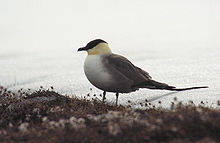
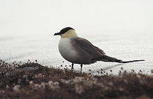

| Long-tailed Skua | |
|---|---|
|  | |
| Conservation status | |
| Binomial name | |
| Stercorarius longicaudus (Vieillot, 1819) |
| Long-tailed Skua | |
|---|---|
|  | |
| Conservation status | |
| Binomial name | |
| Stercorarius longicaudus (Vieillot, 1819) |
The Long-tailed Skua, Stercorarius longicaudus (known as the Long-tailed Jaeger in North America) is a seabird in the skua family Stercorariidae.
This is the smallest of the skua family at about 38cm length, excluding the elongated central tail feathers of the summer adult, which can add another 20cm or so.
This species breeds in the high Arctic of Eurasia and North America, with major populations in Russia, Alaska and Canada and smaller populations around the rest of the Arctic. It is a migrant, wintering in the south Atlantic and Pacific. Passage juvenile birds sometimes hunt small prey in ploughed fields or golf-courses, and are typically quite fearless of humans.
They nest on dry tundra or higher fells laying two spotted olive-brown eggs. On the breeding grounds they can be heard making yelping and rattling sounds. Outside of the breeding season they spend most of their time over open ocean and have a harsh kreeah cry. This bird feeds on fish (mainly caught from other seabirds), small birds, scraps, small mammals and carrion. On migration, Long-tailed Jaegers are more likely to catch their own food, and less likely to steal from gulls and terns than larger species.
This species is unmistakable as an adult, with grey back, dark primary wing feathers without a white "flash", black cap and very long tail. Adults often hover over their breeding territories. Juveniles are much more problematic, and are difficult to separate from Parasitic Jaeger over the sea. They are slimmer, longer-winged and more tern-like than that species, but show the same wide range of plumage variation. However, they are usually colder toned than Arctic, with greyer shades, rather than brown.

_26.jpg){kind=link}
{kind=link}